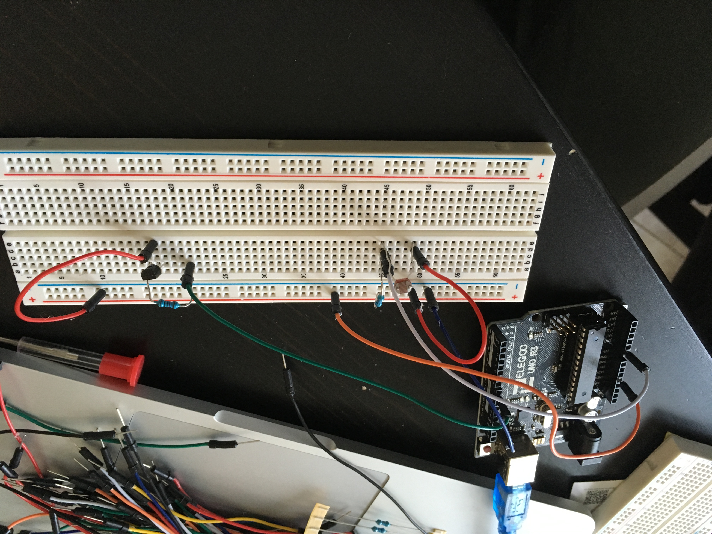
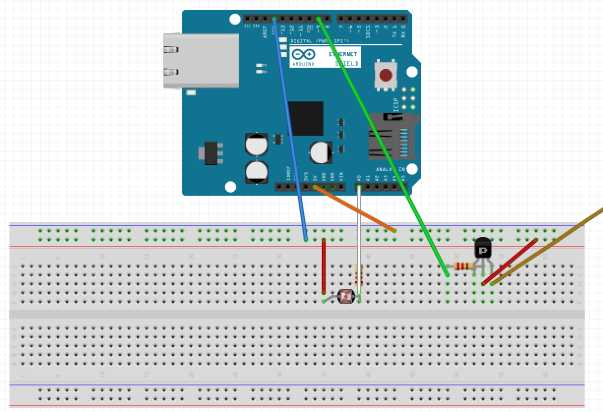
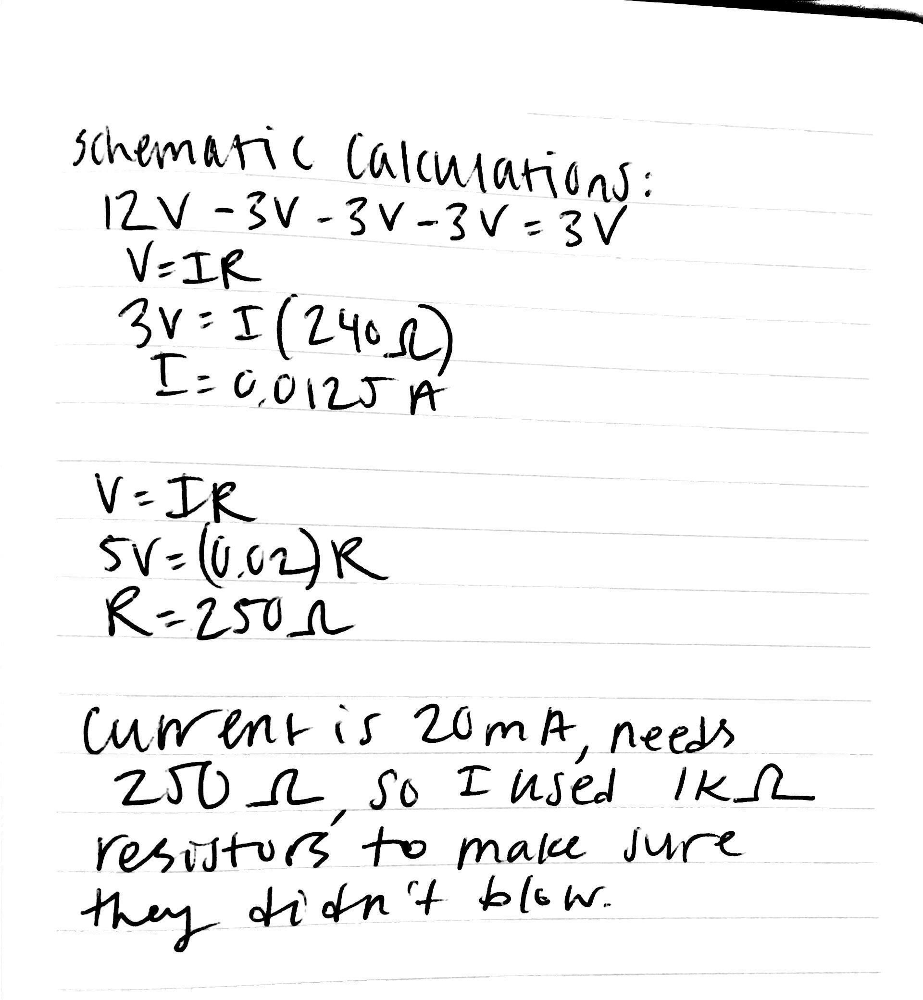

Rachel Ren's Assignment 4!



Above are images and a shematic of the circuit.
Above are the calculations for using the 1k resistor and a calculation of how much current is being used. Here is all the code documentation for Assignment 4:
// LED connected to digital pin 9
int ledPin = 9;
// Initialize value to read from the photoresistor
int sensorValue = 0;
// Initialize value output
int outputValue = 0;
// Initializing constant A0 for analog pin
const int analogInPin = A0;
// Setting up Arduino pins and serial monitor
void setup() {
// Setting analogInPin as an input through A0
pinMode(analogInPin, INPUT);
// Setting analogInPin as an output through pin 9
pinMode(ledPin, OUTPUT);
// Initializing serial communications at 9600 bps
Serial.begin(9600);
}
void loop() {
// Setting sensorValue as the value read by analogInPin
sensorValue = analogRead(analogInPin);
// Writing the sensorValue to the serial monitor
Serial.println(sensorValue);
// Mapping the outputValue to the range of the analog out:
// 0 - 1023 is the range of values that a reading from analogRead could be
// 0 - 255 is the range of values to convert for the LED
outputValue = map(sensorValue, 0, 1023, 0, 255);
// cnage the analog out value
analogWrite(ledPin, outputValue);
}